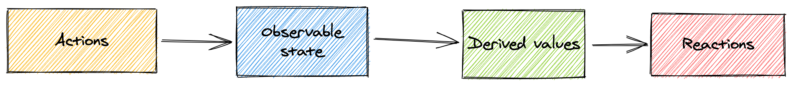

Concepts & Principles
Concepts
MobX distinguishes the following concepts in your application. You saw them in the previous gist, but let's dive into them in a bit more detail.
1. State
State is the data that drives your application. Usually there is domain specific state like a list of todo items and there is view state such as the currently selected element. Remember, state is like spreadsheets cells that hold a value.
2. Derivations
Anything that can be derived from the state without any further interaction is a derivation. Derivations exist in many forms:
- The user interface.
- Derived data, such as the number of todos left.
- Backend integrations like sending changes to the server.
MobX distinguishes two kind of derivations:
- Computed values. These are values that can always be derived from the current observable state using a pure function.
- Reactions. Reactions are side effects that need to happen automatically if the state changes. These are needed as a bridge between imperative and reactive programming. Or to make it more clear, they are ultimately needed to achieve I/O.
People starting with MobX tend to use reactions too often.
The golden rule is: if you want to create a value based on the current state, use computed.
Back to the spreadsheet analogy, formulas are derivations that compute a value. But for you as a user to be able to see it on the screen a reaction is needed that repaints part of the GUI.
3. Actions
An action is any piece of code that changes the state. User events, backend data pushes, scheduled events, etc. An action is like a user that enters a new value in a spreadsheet cell.
Actions can be defined explicitly in MobX to help you to structure code more clearly. If MobX is used in strict mode, MobX will enforce that no state can be modified outside actions.
Principles
MobX supports a uni-directional data flow where actions change the state, which in turn updates all affected views.

All Derivations are updated automatically and atomically when the state changes. As a result it is never possible to observe intermediate values.
All Derivations are updated synchronously by default. This means that, for example, actions can safely inspect a computed value directly after altering the state.
Computed values are updated lazily. Any computed value that is not actively in use will not be updated until it is needed for a side effect (I/O). If a view is no longer in use it will be garbage collected automatically.
All Computed values should be pure. They are not supposed to change state.
Illustration
The following listing illustrates the above concepts and principles:
import {observable, autorun} from 'mobx';
var todoStore = observable({
/* some observable state */
todos: [],
/* a derived value */
get completedCount() {
return this.todos.filter(todo => todo.completed).length;
}
});
/* a function that observes the state */
autorun(function() {
console.log("Completed %d of %d items",
todoStore.completedCount,
todoStore.todos.length
);
});
/* ..and some actions that modify the state */
todoStore.todos[0] = {
title: "Take a walk",
completed: false
};
// -> synchronously prints 'Completed 0 of 1 items'
todoStore.todos[0].completed = true;
// -> synchronously prints 'Completed 1 of 1 items'
In the 10 minute introduction to MobX and React you can dive deeper into this example and build a user interface using React around it.